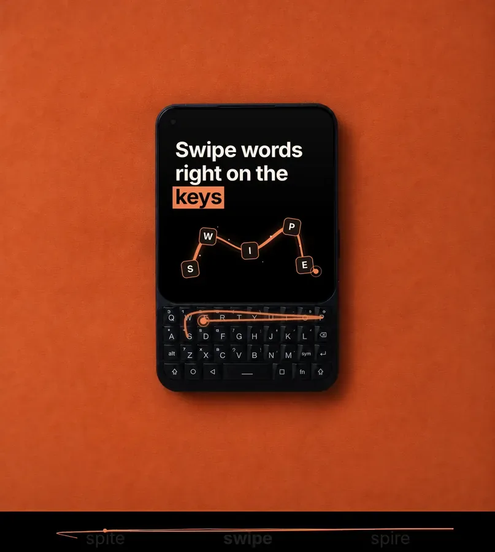
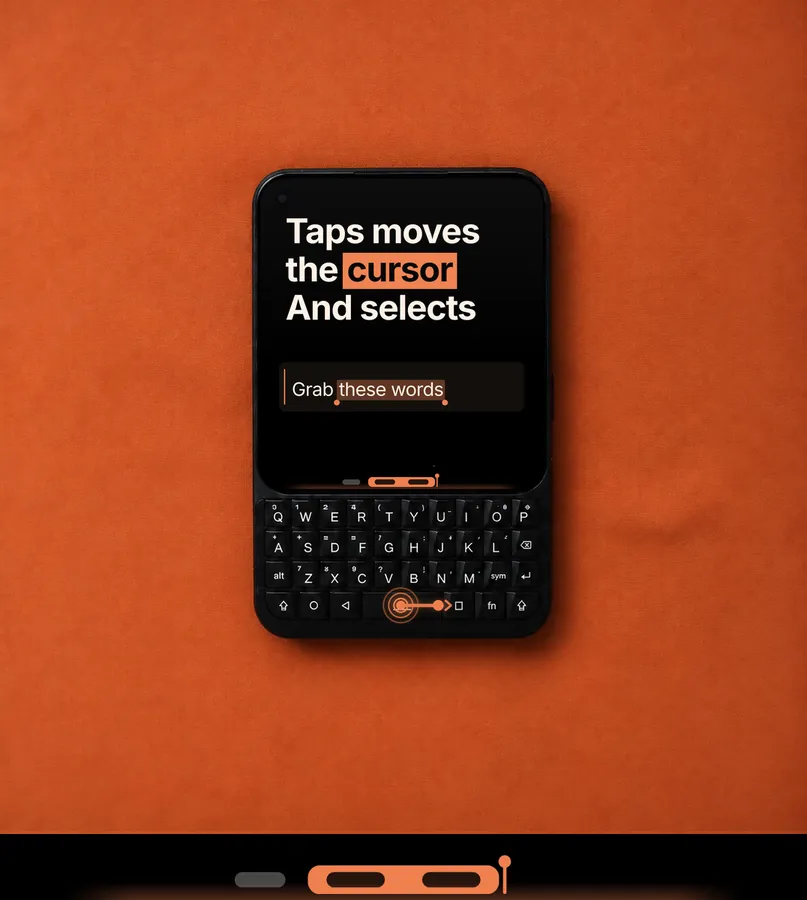
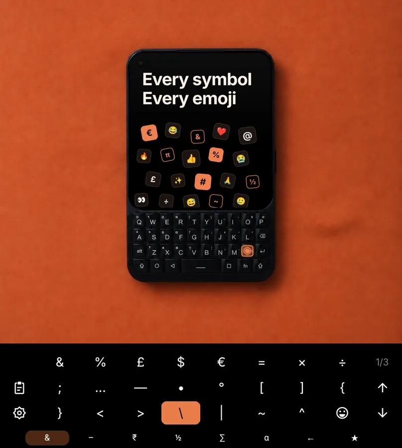
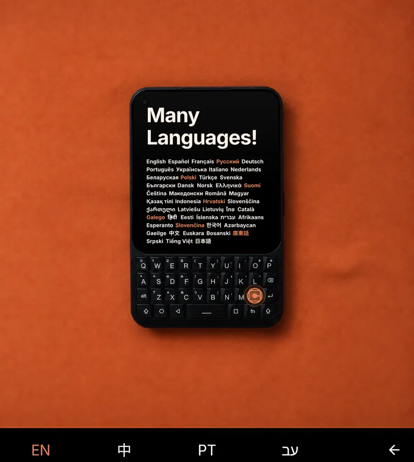
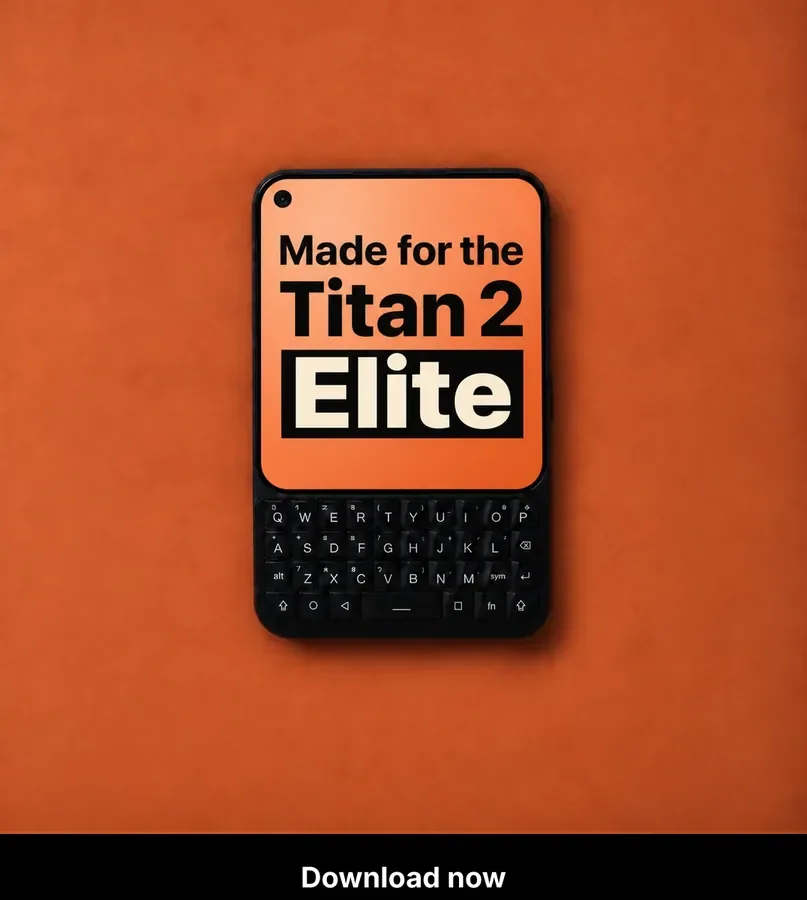

Swipe words right on the keys
Swipe a word across the same keys you press. One thumb is enough, and the swipe model is trained for this phone, so it lands the word you meant.
TitanKeys 3.0
This phone deserves a keyboard of its own. So here it is: swipe words on the keys you press, type one-handed with ease, and let it fix your typos as you go.

Swipe a word across the same keys you press. One thumb is enough, and the swipe model is trained for this phone, so it lands the word you meant.

Press Space and the typo is gone. It picks the fix that fits your whole sentence. Built on Numen's autocorrect, with a lot more on top.

Double-tap Space and slide to move the cursor, triple-tap to select. Give it a day and you'll wonder how you typed without it.

Hold a key for its symbol, or open Sym for all of them. Know the name? Type :name: and the emoji appears.

49 languages, up to four at once. Type in yours and tell us how it goes. If you're a developer, come help.
A friendly guide sets you up in minutes. After that, nearly everything has its own switch, down to the haptics on flick to delete.

TitanKeys is on Google Play as a test for now. It shows up in search once enough people join, so it takes one extra step today:
Stuck on step 3?
Download the APK No Google Play? Same app, same key. All releases
A separate app
Titan Tools is a separate little app that makes your Titan 2 Elite and TitanKeys work even better together.
The key light, layout switch and Night mode need Shizuku, a free app, and the setup walks you through it.
Download Titan Tools (APK) Titan Tools releases Titan Tools source